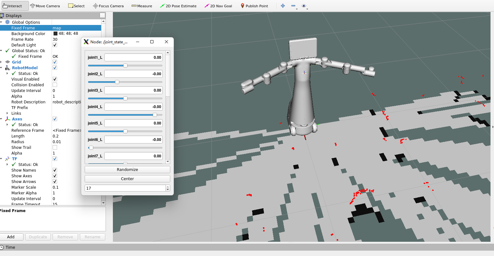

Mercury X1的控制
这里主要介绍如何通过一系列相关指令对Mercury X1进行移动控制。
1.底盘底层通信
首先启动底盘的底层通信、地图构建程序。 打开ROS1环境终端，然后运行命令：
roslaunch turn_on_mercury_robot mapping.launch
输出如下信息：
... logging to /home/er/.ros/log/34bcf3be-0606-11ef-8293-e8fb1c355a09/roslaunch-er-desktop-7394.log
Checking log directory for disk usage. This may take a while.
Press Ctrl-C to interrupt
Done checking log file disk usage. Usage is <1GB.
started roslaunch server http://er-desktop:43117/
SUMMARY
========
PARAMETERS
* /LD14/disable_max: [180]
* /LD14/disable_min: [120]
* /LD14/flag_parted: True
* /if_akm_yes_or_no: no
* /lsm10_v2/baud_rate: 460800
* /lsm10_v2/disable_max: [260]
* /lsm10_v2/disable_min: [100]
* /lsm10_v2/frame_id: laser
* /lsm10_v2/max_distance: 30.0
* /lsm10_v2/min_distance: 0.0
* /lsm10_v2/scan_topic: scan
* /lsm10_v2/serial_port: /dev/wheeltec_lidar
* /lsm10_v2/truncated_mode: 1
* /lsn10/disable_max: [10, 40, 70, 180]
* /lsn10/disable_min: [0, 30, 60, 90]
* /lsn10/max_distance: 30.0
* /lsn10/min_distance: 0.0
* /lsn10/truncated_mode: 0
* /mercury_robot/gyro_frame_id: gyro_link
* /mercury_robot/odom_frame_id: odom
* /mercury_robot/robot_frame_id: base_footprint
* /mercury_robot/serial_baud_rate: 115200
* /mercury_robot/usart_port_name: /dev/wheeltec_con...
* /robot_description: <?xml version="1....
* /robot_pose_ekf/base_footprint_frame: base_footprint
* /robot_pose_ekf/freq: 30.0
* /robot_pose_ekf/imu_used: True
* /robot_pose_ekf/odom_data: odom
* /robot_pose_ekf/odom_used: True
* /robot_pose_ekf/output_frame: odom
* /robot_pose_ekf/sensor_timeout: 2.0
* /robot_pose_ekf/vo_used: False
* /rosdistro: noetic
* /rosversion: 1.16.0
* /rplidarNode/angle1_end: 50.0
* /rplidarNode/angle1_start: 40.0
* /rplidarNode/angle2_end: 140.0
* /rplidarNode/angle2_start: 130.0
* /rplidarNode/angle3_end: 230.0
* /rplidarNode/angle3_start: 220.0
* /rplidarNode/angle4_end: 320.0
* /rplidarNode/angle4_start: 310.0
* /rplidarNode/angle_end: 360.0
* /rplidarNode/angle_start: 0.0
* /rplidarNode/distance_max: 30.0
* /rplidarNode/distance_min: 0.0
* /rplidarNode/is_parted: False
* /slam_gmapping/angularUpdate: 0.0436
* /slam_gmapping/astep: 0.05
* /slam_gmapping/base_frame: base_footprint
* /slam_gmapping/delta: 0.05
* /slam_gmapping/iterations: 5
* /slam_gmapping/kernelSize: 3
* /slam_gmapping/lasamplerange: 0.005
* /slam_gmapping/lasamplestep: 0.005
* /slam_gmapping/linearUpdate: 0.05
* /slam_gmapping/llsamplerange: 0.01
* /slam_gmapping/llsamplestep: 0.01
* /slam_gmapping/lsigma: 0.075
* /slam_gmapping/lskip: 0
* /slam_gmapping/lstep: 0.05
* /slam_gmapping/map_update_interval: 0.01
* /slam_gmapping/maxRange: 5.0
* /slam_gmapping/maxUrange: 4.0
* /slam_gmapping/minimumScore: 30
* /slam_gmapping/odom_frame: odom
* /slam_gmapping/ogain: 3.0
* /slam_gmapping/particles: 8
* /slam_gmapping/resampleThreshold: 0.5
* /slam_gmapping/sigma: 0.05
* /slam_gmapping/srr: 0.01
* /slam_gmapping/srt: 0.02
* /slam_gmapping/str: 0.01
* /slam_gmapping/stt: 0.02
* /slam_gmapping/temporalUpdate: -1.0
* /slam_gmapping/xmax: 5.0
* /slam_gmapping/xmin: -5.0
* /slam_gmapping/ymax: 4.0
* /slam_gmapping/ymin: -4.0
NODES
/
base_to_camera (tf/static_transform_publisher)
base_to_gyro (tf/static_transform_publisher)
base_to_laser (tf/static_transform_publisher)
base_to_link (tf/static_transform_publisher)
joint_state_publisher (joint_state_publisher/joint_state_publisher)
lsm10_v2 (lsm10_v2/lsm10_v2)
mercury_robot (turn_on_mercury_robot/mercury_robot_node)
robot_pose_ekf (robot_pose_ekf/robot_pose_ekf)
robot_state_publisher (robot_state_publisher/robot_state_publisher)
save_map (world_canvas_msgs/save)
slam_gmapping (gmapping/slam_gmapping)
auto-starting new master
process[master]: started with pid [7403]
ROS_MASTER_URI=http://localhost:11311
setting /run_id to 34bcf3be-0606-11ef-8293-e8fb1c355a09
process[rosout-1]: started with pid [7414]
started core service [/rosout]
process[lsm10_v2-2]: started with pid [7421]
process[save_map-3]: started with pid [7422]
process[slam_gmapping-4]: started with pid [7427]
port = /dev/wheeltec_lidar, baud_rate = 460800
open_port /dev/wheeltec_lidar OK !
process[mercury_robot-5]: started with pid [7434]
process[base_to_link-6]: started with pid [7437]
process[base_to_laser-7]: started with pid [7447]
[ INFO] [1714380923.257953390]: Data ready
[ INFO] [1714380923.271190031]: tringai_robot serial port opened
process[base_to_camera-8]: started with pid [7455]
process[base_to_gyro-9]: started with pid [7461]
process[joint_state_publisher-10]: started with pid [7464]
process[robot_state_publisher-11]: started with pid [7476]
process[robot_pose_ekf-12]: started with pid [7488]
[ INFO] [1714380923.815804921]: output frame: odom
[ INFO] [1714380923.822399818]: base frame: base_footprint
[ INFO] [1714380924.077547181]: Initializing Odom sensor
[ INFO] [1714380924.582680406]: Odom sensor activated
[ INFO] [1714380925.085858055]: Initializing Imu sensor
[ INFO] [1714380925.087556508]: Kalman filter initialized with odom measurement
[ INFO] [1714380925.091287721]: Imu sensor activated
[ INFO] [1714380925.206262818]: Laser is mounted upwards.
-maxUrange 4 -maxUrange 5 -sigma 0.05 -kernelSize 3 -lstep 0.05 -lobsGain 3 -astep 0.05
-srr 0.01 -srt 0.02 -str 0.01 -stt 0.02
-linearUpdate 0.05 -angularUpdate 0.0436 -resampleThreshold 0.5
-xmin -5 -xmax 5 -ymin -4 -ymax 4 -delta 0.05 -particles 8
[ INFO] [1714380925.222595401]: Initialization complete
update frame 0
update ld=0 ad=0
Laser Pose= 0.0368556 0.000564671 3.14
m_count 0
Registering First Scan
update frame 4089
update ld=0.0500112 ad=4.53872e-06
Laser Pose= 0.0383474 0.001601 3.14
2.加载URDF模型
底层通信程序启动后，接着通过launch文件加载Mercury X1的URDF模型，打开一个ROS1环境终端，然后运行命令。
roslaunch turn_on_mercury_robot slider_control.launch
效果图如下：

接着你可以通过拖动滑块来控制 rviz 中的关节模型移动。
3.关节控制
URDF模型加载成功之后，如果你想让真实的 Mercury X1 跟着一起运动，需要再打开一个ROS1环境终端，然后运行命令：
rosrun turn_on_mercury_robot slider_control.py
请注意：由于在命令输入的同时机械臂会移动到模型目前的位置，在您使用命令之前请确保rviz中的模型没有出现穿模现象 不要在连接机械臂后做出快速拖动滑块的行为，防止机械臂损坏
4 底盘控制
关节控制程序启动之后，如果你想让真实的Mercury X1中的底盘小车跟着一起运行，需要启动底盘小车的键盘控制程序，再打开一个ROS1环境终端，然后运行命令：
rosrun turn_on_mercury_robot mercury_keyboard.py